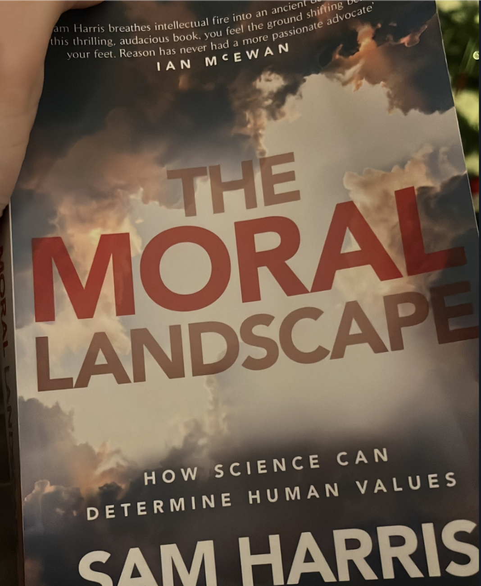

| Book |
Author |
Scientific Rating |
Wise musings |
The Moral Landscape (2010)
 |
Sam Harris |
★ ★ ★ ☆ ☆ |
The central thesis is that our morals and ethics should be guided by one overriding objective: to reduce suffering. Seems reasonable, and I was quite persuaded. But this being a Sam Harris book, he went meandering off down all sorts of interesting ginnels of tangential intellectual extravaganza.
Apt quote:
Do we need two selves to account for this disparity? No. The vagaries of memory suffice.
As Kahneman admits, the vast majority of our experiences in life never get recalled, and the time we spend actually remembering the past is comparatively brief. Thus, the quality of most of our lives can be assessed only in terms of whatever fleeting character it has as it occurs. But this includes the time we spend recalling the past. Amid this flux, the moments in which we construct a larger story about our lives appear like glints of sunlight on a dark river: they may seem special, but they are part of the current all the same.
Read in January 2023 |
Angels of Caliban (2016) |
Gav Thorpe |
★ ★ ★ ☆ ☆ |
I found this one a bit of a chore at times, because there was so much background fluff I either didn’t remember from the earlier Dark Angel books, or that came from various novellas and audiobooks that I have never read/heard to begin with. This can be a downside of following an abbreviated reading list, but - come on, who has read ALL the novellas? Come on. Anyway, the bits that were not set on Caliban (which is a bit dull) were still pretty good. And they are the main reason I read this one. It’s set on Ultramar and deals with the collapse of the mini-Imperium-Secundus thing. Main takeaway is that Lion El’Johnson is a bit of a surly “douche”.
Read in January 2023 |
Big Blues: the Unmaking of IBM (1994) |
Paul Carroll |
★ ★ ★ ☆ ☆ |
3 stars is a maybe a tad harsh, but it was a bit plodding. Nonetheless, very interesting. I just love hoovering up all the incidental details in these accounts of 80s tech companies. It was hard to keep up with all the different names (how many different managers did IBM have during this period?). But anyway, I learnt a lot about the history of IBM, and in particular, the period from the early 80s to the early 90s where they managed to cram in a lot of high highs and low lows. One day, I’d love to play around on the original PC. But I may have to content myself with an LGR Youtube video about it.
Read in January 2023 |
The Big Sleep |
bla bla |
bla bla |
>bla bla. |
Scars |
bla bla |
bla bla |
>bla bla. |
When Computing got Personal |
bla bla |
bla bla |
>bla bla. |